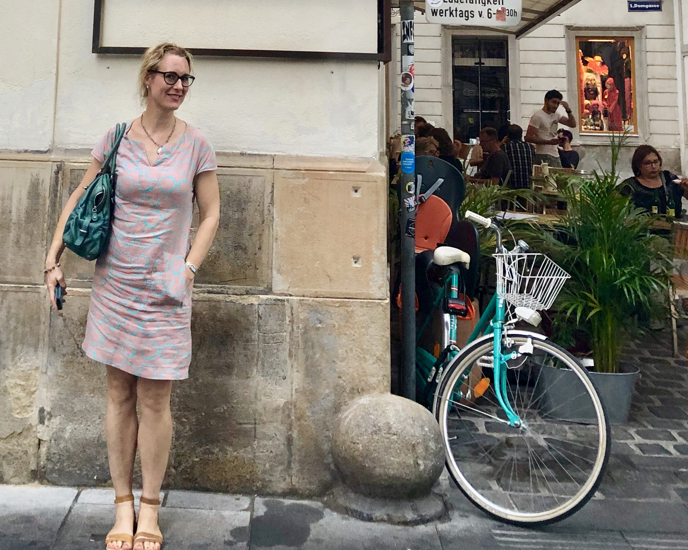

About
Author Biography
Ellen Drennan Elder was born in New York City and raised in the Northern Kentucky/Cincinnati region. A child of four lawyers, she studied English and Creative Writing at The University of Chicago, Miami University of Ohio and The University of Wisconsin-Milwaukee. She spent childhood summers in Ireland where her family ran an inn. Her poems and reviews have appeared in About Place Journal, Banshee Lit, Poetry, Tampa Review, Tupelo Quarterly and elsewhere. Her poetry collection We Left a Window Open to the Sea (Fleur-de-Lis Press) was awarded The Louisville Review's Frederick Smock poetry prize in 2026. Formerly co-poetry editor at Literary Mama, she writes about motherhood, childhood, grief and the influence of transnational experience on expression. As things transpire, she has lived in 17 cities in four countries, including Switzerland. She taught at Heinrich Heine University Düsseldorf and lived for nine years in Germany before relocating to Charleston, South Carolina where she lives with her daughter.
